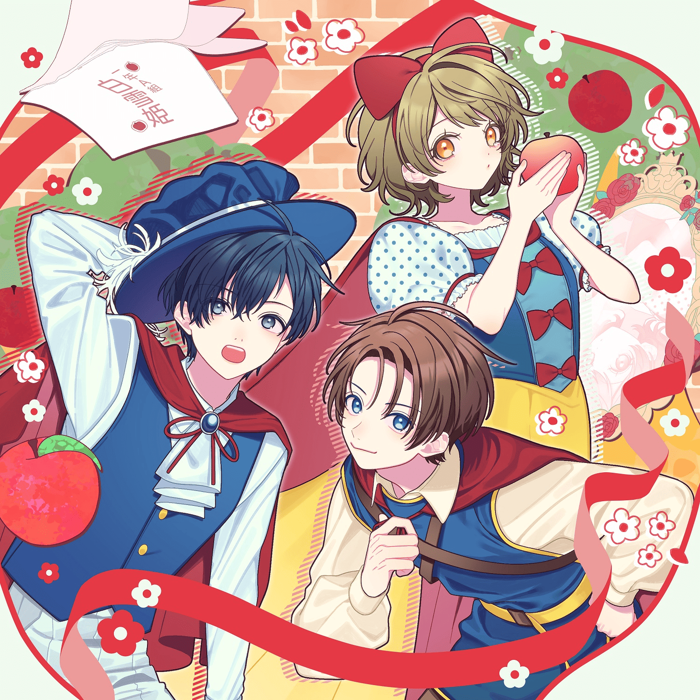

このサイトはβ版です
サイトの改善に向けてアンケートを実施しています。ご協力いただいた方のお名前（ご希望の方のみ）はThanksページに掲載させていただきます。
年表や一部ライブのセトリの入力が終わっていませんのでご注意ください。
年表
| 年 | 月 | 主な出来事 | ライブ | 動画 | その他 |
|---|---|---|---|---|---|
| 2019年 | 10月 | 28日:Sunsetカンフー | |||
| 11月 | 3日:「アイオライト」2部制 | ||||
| 12月 | 31日:コミックマーケット97参加 31日:同人1stアルバム「恋色同盟」 | ||||
| 2020年 | 1月 | 19日:「HoneyWorks Premium Live Tour 2020 〜好きすぎてやばい。〜」福岡 25日:「HoneyWorks Premium Live Tour 2020 〜好きすぎてやばい。〜」愛知 26日:「HoneyWorks Premium Live Tour 2020 〜好きすぎてやばい。〜」大阪 | |||
| 2月 | 2日:「HoneyWorks Premium Live Tour 2020 〜好きすぎてやばい。〜」北海道 9日:「HoneyWorks Premium Live Tour 2020 〜好きすぎてやばい。〜」東京 9日:「HoneyWorks Premium Live Tour 2020 〜好きすぎてやばい。〜」東京 | 28日:じゃぱにーずTOKYOガール | |||
| 3月 | 20日:「HoneyWorks Premium Live Tour 2020 〜好きすぎてやばい。〜」東京
(コロナにより無観客) | ||||
| 4月 | 11日:恋文 | ||||
| 5月 | 23日:クラウドファンディング | 5日:最悪な日でもあなたが好き。 8日:恋人たちのハッピーバースデー | |||
| 6月 | 27日:ロキ | ||||
| 8月 | 12日:打上花火 28日:東京サマーセッション-Acoustic Live ver- 29日:愛に出会い恋は続く-Acoustic Live ver- 29日:恋文-Acoustic Live ver- 30日:ともに | ||||
| 9月 | 16日:セプテンバーさん | ||||
| 10月 | 1日:【試聴動画】水声少女 17日:シス×ラブ | ||||
| 11月 | 29日:「HoneyWorks Premium Live Tour 2020 〜好きすぎてやばい。〜」振替 | 6日:婚約戦争 12日:再会 | |||
| 12月 | 3日:同人2ndアルバム「水声少女」サブスク配信 | 6日:「ストレリチア」昼夜 | |||
| 2021年 | 1月 | 30日:シルエット | |||
| 2月 | 14日:チョコレイト・ディスコ | ||||
| 3月 | 9日:１・２・３ 31日:さよならメモリーズ | ||||
| 4月 | 4日:大嫌いなはずだった。 7日:Make you happy | ||||
| 5月 | 22日:クラウドファンディング | 5日:グッバイ宣言 29日:サマー様 31日:大人禁猟区 | |||
| 6月 | 19日:同人ミニアルバム「Mirage Vox」サブスク配信 24日:ハコニワリリィオフィシャルTwitter開設 24日:ハコニワリリィメジャーデビュー決定！ | 2日:にゃんにゃんおやつクッキング 4日:ハロウィンナイトパーティ 5日:ミライチズ 6日:Wave 11日:一緒なら | |||
| 8月 | 1日:ラブガンナー 15日:神のまにまに 16日:コガネゾラ | ||||
| 9月 | 1日:「ハコニワリリィ」としてメジャーデビュー 1日:ハコリリ1stシングル「コガネゾラ」 （アニメ「SDガンダムワールド ヒーローズ」EDテーマ） | 24日:「コガネゾラ」発売記念リリースイベント
＠アニメイト池袋本店9Fイベントホール | 4日:きっと仲直り 5日:世界中の誰よりきっと | ||
| 10月 | 10日:「コガネゾラ」発売記念リリースイベント
＠AKIHABARAゲーマーズ本店 10日:「コガネゾラ」発売記念リリースイベント ＠エンタバアキバ 23日:「コガネゾラ」発売記念リリースイベント ＠タワーレコード渋谷店B1F CUTUP STUDIO | ||||
| 11月 | 5日:好きぴしか勝たん！ | ||||
| 12月 | 28日:「HoneyWorks Premium Live 2021〜ハニフェス〜」 | ||||
| 2022年 | 5月 | 25日:キョリ感 | |||
| 6月 | 1日:ハコリリ2ndシングル「キョリ感」
（アニメ「阿波連さんははかれない」EDテーマ） | 25日:「Lily’s Garden Party」昼夜 | |||
| 8月 | 6日:「ミュージックレインフェスティバル2022」※コロナで中止 7日:「ミュージックレインフェスティバル2022」※コロナで中止 | 1日:ビビっとラブ 24日:センパイ。 | |||
| 9月 | 28日:ハコリリ1stアルバム「Lilyʼs Plage」 | 11日:別れ 22日:夏、透明な青に惹かれて。 | |||
| 10月 | 22日:僕が最高だから | ||||
| 11月 | 18日:LINE公式アカウント開設 | 18日:「ハコニワリリィ Live Tour ~Lily’s Plage~」愛知 20日:「ハコニワリリィ Live Tour ~Lily’s Plage~」東京 昼夜 26日:「ハコニワリリィ Live Tour ~Lily’s Plage~」兵庫 | |||
| 12月 | 30日:コミックマーケット101参加 30日:同人ミニアルバム「Winter Vox」 | 11日:世界一の友人だったあなたへ 18日:花の塔 21日:ハッピークリスマスパーティ 23日:Last Christmas | |||
| 2023年 | 1月 | 16日:リベリオン | |||
| 2月 | 5日:デビルじゃないもん 10日:この世界の楽しみ方 12日:秘密のバレンタイン 18日:僕らのRTA | ||||
| 4月 | 8日:マサキじゃないけど好き 18日:ふわり 30日:最強☆ソング | ||||
| 5月 | 5日:コネクト 6日:irony 7日:ナイショの話 19日:かわいい私の片想い 26日:きらきらスイーツパーチー | ||||
| 6月 | 8日:ぎじれんあい | ||||
| 7月 | 7日:泡沫の夢 | ||||
| 8月 | 13日:同人ミニアルバム「Summer Vox」 13日:コミックマーケット102参加 | 12日:陽だまりデイズ | |||
| 9月 | 1日:「2周年記念ファンミーティング」 | 2日:ひと夏のエラー 30日:キスしちゃだめっ！ | |||
| 11月 | 3日:メイド☆至上主義 25日:恋元素爆発 | ||||
| 12月 | 30日:コミックマーケット103参加 30日:同人ミニアルバム「Spring Vox」 | ||||
| 2024年 | 1月 | 28日:Beyond the way | |||
| 2月 | 9日:ツインテール魔法少女 28日:ブラッディ・グルービー 29日:キワメテカワイイ | ||||
| 3月 | 27日:私のこと好きでしょ？ | ||||
| 4月 | 29日:「ハニフェス ～女子校文化祭 日比谷～」 | 14日:2人きりになっちゃってよ | |||
| 5月 | 4日:推しの魔法 | ||||
| 6月 | 7日:CeVIO AI「箱庭ハノ」「箱庭コト」販売 | 2日:HoneyWorks Presents ハニフェス ～女子校文化祭 渋谷～ | 8日:まわり | ||
| 7月 | 28日:夏祭り | ||||
| 8月 | 12日:コミックマーケット104参加 12日:同人ミニアルバム「Autumn Vox」 | 4日:「ハコリリ夏祭り2024」昼夜 | 5日:secret base ～君がくれたもの～ 9日:キュンってさせて！ 24日:恋愛ロジック | ||
| 10月 | 4日:デジタルシングル「キラキラ」
（TVアニメ「結婚するって、本当ですか」OPテーマ） | 4日:キラキラ | |||
| 11月 | 22日:「AiceParade -3D debut-」 | 15日:全力スタートライン | |||
| 12月 | 10日:愛に出会い恋は続く 20日:Get out of my way! | ||||
| 2025年 | 1月 | 7日:お正月グッズセット販売 29日:CeVIO AI「箱庭ハノ」「箱庭コト」一般販売 | 1日:「アオハル応援歌」(コーラス) | ||
| 2月 | 23日:「AquaLilyum 〜アクアリリウム〜」宮城 | 12日:ファンサ 14日:恋の矢印 | |||
| 3月 | 15日:「AquaLilyum 〜アクアリリウム〜」愛知 16日:「AquaLilyum 〜アクアリリウム〜」大阪 22日:「AquaLilyum 〜アクアリリウム〜」福岡 30日:「AquaLilyum 〜アクアリリウム〜」東京 昼夜 | ||||
| 4月 | 5日:デジタルシングル「質問、恋って何でしょうか？」
（TVアニメ「男女の友情は成立する？（いや、しないっ!!）」OPテーマ） 11日:デジタルシングル「にんころダンス」 （TVアニメ「忍者と殺し屋のふたりぐらし」EDテーマ） 18日:エイトフォーCMソング歌唱 25日:らむちゃんとの楽曲交換コラボ | 5日:質問、恋って何でしょうか？ 17日:にんころダンス 22日:ダイダイダイダイダイキライ 25日:僕らのファイトソング | |||
| 5月 | 27日:まるもち部歌ってみた | 31日:「Floral Greeting」昼夜 | 7日:彼女は今、迷宮の中。 12日:PLAYERS 27日:カレンダーガール | ||
| 6月 | 11日:「#Ｍ学園インストール！」のDRAMA TRACKにてゲスト出演 21日:CHiCOちゃんとの歌ってみたコラボ | 21日:初恋サイダー | |||
| 7月 | 4日:鎖那、CHiCOと女子会R.E.P.O. 5日:AiceClass2周年歌枠リレー 6日:ゼンレスゾーンゼロ イメージソング歌唱 12日:「ハコリリ夏祭り2025」で鎖那と共演 13日:「ハコリリ夏祭り2025」でCHiCOと共演 20日:Tani Yuukiとの歌ってみたコラボ | 12日:「ハコリリ夏祭り2025」昼夜 13日:「ハコリリ夏祭り2025」昼夜 | 14日:鎖那ちゃんはのことイラスト | ||
| 8月 | 4日:夏だ女子マイクラ祭り参加 5日:リングネックレス予約販売開始 28日:ハニワ24時間生放送 | 8日:可愛い理由 | 29日:4周年お祝い応援広告 | ||
| 9月 | 1日:ハコリリ4周年配信 1日:はのことぬいぐるみ受注開始 12日:AiceClassオリ曲投稿 | 15日:「ハニフェス2025 ～女子校文化祭 日比谷～」 | 6日:コガネゾラ-Acoustic Live ver.- 12日:質問、恋って何でしょうか？-Acoustic Live ver.- 19日:君の一番になりたいの！-Acoustic Live ver.- 28日:T氏の話を信じるな | ||
| 10月 | 7日:デジタルシングル「絶対称賛！」
（TVアニメ「笑顔のたえない職場です。」OPテーマ） 18日:七海うらら主催歌枠リレー参加 | 13日:絶対称賛！ | 22日:「Bouquet」ビジュアル等公開 | ||
| 11月 | 15日:「ANIMAX MUSIX 2025 YOKOHAMA」 | 21日:可愛くてごめん -THE FIRST TAKE- | |||
| 12月 | 20日:「Bouquet」昼夜 | 3日:決戦スピリット -THE FIRST TAKE- |
リリース
アルバム

同人ミニアルバム
Autumn Vox

同人ミニアルバム
Spring Vox

同人ミニアルバム
Summer Vox

同人ミニアルバム
Winter Vox

アルバム
Lily@s Plage

同人ミニアルバム
Mirage Vox
シングル

デジタルシングル
君の隣は空気が美味しい
デジタルシングル
君が灯してくれた光を今
デジタルシングル
絶対称賛！
デジタルシングル
にんころダンス

デジタルシングル
質問、恋って何でしょうか？
デジタルシングル
キラキラ
シングル
キョリ感
リリース曲一覧（ALL）


歌動画
伸びた動画TOP10


歌動画一覧（ALL）


![[MV] DYES IWASAKI × ハコニワリリィ x Gom - Rabbit Number [Zenless Zone Zero]](https://i.ytimg.com/vi/leRS6hwqZto/mqdefault.jpg)


![[MV] DYES IWASAKI - ジャンキーハニー！ feat.ハコニワリリィ, Gom, ななひら, 青妃らめ, Sooda [#HoYoFair #ZenlessZoneZero]](https://i.ytimg.com/vi/qEVc2OUuLZc/mqdefault.jpg)


切り抜き(非公式)
切り抜き一覧（ALL）


ライブ
2018-12-22 夜公演THEATRE1010
- 夢ファンファーレ (LIP×LIP)
- ロメオ (LIP×LIP)
- ノンファンタジ (あげいん×Gero)
- 恋をしよう (あげいん×Gero)
- 小さなライオン (あげいん×Gero×いかさん)
- 今好きになる。 (TM)
- 私が恋を知る日 (Hanon)
- 僕が名前を呼ぶ日 (いかさん)
- 私、アイドル宣言 (CHiCO)
- センパイ。 (Hanon×TM)
- 東京サマーセッション (CHiCO×いかさん)
- 東京ウインターセッション (全員)
2018-12-23 夜公演THEATRE1010
- 夢ファンファーレ (LIP×LIP)
- ロメオ (LIP×LIP)
- ノンファンタジー (あげいん×Gero)
- リペイント (あげいん×Gero)
- 小さなライオン (あげいん×Gero×いかさん)
- 今好きになる。 (TM)
- 私が恋を知る日 (Hanon)
- 僕が名前を呼ぶ日 (いかさん)
- 私、アイドル宣言 (CHiCO)
- 大嫌いなはずだった。 (Hanon×TM)
- 東京サマーセッション (CHiCO×いかさん)
- 東京ウインターセッション (全員)
2018-12-24 昼公演THEATRE1010
2018-12-24 夜公演THEATRE1010
2019-2-24 昼の部Future SEVEN
2019-2-24 夜の部Future SEVEN
2019-7-21 昼公演赤羽ReNY alpha
2019-7-21 夜公演赤羽ReNY alpha
2019-8-11 大阪グランキューブ大阪
2019-8-12 大阪グランキューブ大阪
2019-8-18 東京中野サンプラザホール
2019-8-19 東京中野サンプラザホール
2019-8-21 東京中野サンプラザホール
2019-8-22 東京中野サンプラザホール
2019-8-31 愛知日本特殊陶業市民会館 フォレストホール
2019-11-3 第1部[ライブ]FutureSEVEN
- 月曜日の憂鬱 (Hanon)
- 私、アイドル宣言 (Hanon)
- メーベル (Hanon)
- だから僕は音楽を辞めた (Hanon)
- 私が恋を知る日 (Hanon)
- Sunset カンフー (Hanon,Kotoha)
- 日曜日の秘密 (Hanon,Kotoha)
- 大嫌いなはずだった。 (Hanon,Kotoha)
- 可愛くなりたい (Kotoha)
- 少女レイ (Hanon,Kotoha)
- 紅蓮華 (Hanon,Kotoha)
- ヒバナ (Hanon,Kotoha)
- ウルフ (Hanon,Kotoha)
- ラブホイッスル (Hanon,Kotoha)
- ファンサ (Hanon,Kotoha)
- 告白してもいいですか -another story- (Hanon,Kotoha)
- カヌレ (Hanon,Kotoha)
- 愛言葉Ⅲ (Hanon,Kotoha)
2019-11-3 第2部[あこはの]FutureSEVEN
- 告白予行練習 (Hanon)
- ただ君に晴れ (Hanon)
- 片想い (Hanon)
- まちがいさがし (Hanon)
- マリーゴールド (Hanon)
- 丸の内サディスティック (Hanon)
- なんでもないや (Hanon)
- 金曜日のおはよう (Hanon)
2019-12-22アソビル 地下1階 PITCH CLUB イベントスペース
2020-1-19 福岡Zepp Fukuoka ※一部掲載
- イノコリ先生 (Hanon,Kotoha,CHiCO)
- ヒロイン育成計画 (Hanon)
- 生意気ハニー –another story– (Hanon)
- ワタシノテンシ (Kotoha)
- 恋愛成就 (Kotoha)
- 恋人たちのハッピーバースデー (Hanon,Kotoha)
- 大嫌いなはずだった。 (Hanon,Kotoha)
- 金曜日のおはよう (Hanon,Kotoha,CHiCO)
2020-1-25 愛知Zepp Nagoya ※一部掲載
- センパイ。 (Hanon,Kotoha,CHiCO)
- ヒロイン育成計画 (Hanon)
- 生意気ハニー –another story– (Hanon)
- ワタシノテンシ (Kotoha)
- 恋愛成就 (Kotoha)
- 恋人たちのハッピーバースデー (Hanon,Kotoha)
- 大嫌いなはずだった。 (Hanon,Kotoha)
- 金曜日のおはよう (Hanon,Kotoha,CHiCO)
2020-1-26 大阪Zepp Osaka Bayside ※一部掲載
- イノコリ先生 (Hanon,Kotoha,CHiCO)
- ヒロイン育成計画 (Hanon)
- 生意気ハニー –another story– (Hanon)
- ワタシノテンシ (Kotoha)
- 恋愛成就 (Kotoha)
- 恋人たちのハッピーバースデー (Hanon,Kotoha)
- 大嫌いなはずだった。 (Hanon,Kotoha)
- 金曜日のおはよう (Hanon,Kotoha,CHiCO)
2020-2-2 北海道Zepp Osaka Bayside ※一部掲載
- センパイ。 (Hanon,Kotoha,CHiCO)
- ヒロイン育成計画 (Hanon)
- 生意気ハニー –another story– (Hanon)
- ワタシノテンシ (Kotoha)
- 恋愛成就 (Kotoha)
- 恋人たちのハッピーバースデー (Hanon,Kotoha)
- 大嫌いなはずだった。 (Hanon,Kotoha)
- 金曜日のおはよう (Hanon,Kotoha,CHiCO)
2020-2-9 東京Zepp DiverCity Tokyo ※一部掲載
- センパイ。 (Hanon,Kotoha,CHiCO)
- ヒロイン育成計画 (Hanon)
- 生意気ハニー –another story– (Hanon)
- ワタシノテンシ (Kotoha)
- 恋愛成就 (Kotoha)
- 恋人たちのハッピーバースデー (Hanon,Kotoha)
- 大嫌いなはずだった。 (Hanon,Kotoha)
- 金曜日のおはよう (Hanon,Kotoha,CHiCO)
2020-3-20 東京(無観客)Zepp Tokyo ※一部掲載
- センパイ。 (Hanon,Kotoha,CHiCO)
- ヒロイン育成計画 (Hanon)
- ワタシノテンシ (Kotoha)
- 恋人たちのハッピーバースデー (Hanon,Kotoha)
- 大嫌いなはずだった。 (Hanon,Kotoha)
- 金曜日のおはよう (Hanon,Kotoha,CHiCO)
2020-11-29幕張メッセイベントホール ※一部掲載
- 恋人たちハッピーバースデー (Hanon,Kotoha)
- 婚約戦争 (Hanon,Kotoha,CHiCO)
- センパイ。 (Hanon,Kotoha,CHiCO,Trysail)
2020-12-6 昼の部品川インターシティホール
- 恋文 (Hanon,Kotoha)
- サマー様 (Hanon,Kotoha)
- ずっといっしょ (Hanon,Kotoha)
- じゃぱにーずTOKYOガール (Hanon,Kotoha)
- にゃんにゃんおやつクッキング (Hanon,Kotoha)
- 炎 (Hanon)
- セカイ (Kotoha)
- ハロウィンナイトパーティ (Hanon,Kotoha)
- 大人禁猟区 (Hanon,Kotoha)
- 好きぴしか勝たん！ (Hanon,Kotoha)
- ラブヘイトマジョリティ (Hanon,Kotoha)
- ワタシノミカタ (Hanon,Kotoha)
- 大嫌いなはずだった。 (Hanon,Kotoha)
- シスラブ [EN] (Hanon,Kotoha)
- すたんどあっぷ！！！ [EN] (Hanon,Kotoha)
2020-12-6 夜の部品川インターシティホール
- 恋文 (Hanon,Kotoha)
- サマー様 (Hanon,Kotoha)
- ずっといっしょ (Hanon,Kotoha)
- じゃぱにーずTOKYOガール (Hanon,Kotoha)
- にゃんにゃんおやつクッキング (Hanon,Kotoha)
- ただ君に晴れ (Kotoha)
- カタオモイ (Hanon)
- ハロウィンナイトパーティ (Hanon,Kotoha)
- 大人禁猟区 (Hanon,Kotoha)
- 好きぴしか勝たん！ (Hanon,Kotoha)
- ラブヘイトマジョリティ (Hanon,Kotoha)
- ワタシノミカタ (Hanon,Kotoha)
- 大嫌いなはずだった。 (Hanon,Kotoha)
- シスラブ [EN] (Hanon,Kotoha)
- すたんどあっぷ！！！ [EN] (Hanon,Kotoha)
2021-12-28 DAY2 ハニワソングス 〜ゲストボーカルライブ〜中野サンプラザ ※一部掲載
- 同担☆拒否 (Kotoha)
- 可愛いねって言われちゃった (Kotoha)
- コガネゾラ (Hanon,Kotoha)
- 大嫌いなはずだった。 (Hanon,Kotoha)
- 推し★ごと (Hanon)
- ホントノワタシ (Hanon)
- 日曜日の秘密 (Hanon,Gero)
- 夢ファンファーレ (Hanon,Kotoha,CHiCO)
- 婚約戦争 (Hanon,Kotoha,CHiCO)
- 金曜日のおはよう (Hanon,Kotoha,CHiCO,Gero,他全員)
2022-6-25 東京 Afternoon品川インターシティホール
- コガネゾラ (Hanon,Kotoha)
- ラブガンナー (Hanon,Kotoha)
- マサキじゃないけど好き (Hanon,Kotoha)
- 恋文 (Hanon,Kotoha)
- 泡沫の夢 (Hanon,Kotoha)
- マジェスティックラブ (Kotoha)
- 叶わぬ恋じゃ終われない！ (Kotoha)
- お注射しちゃいます (Hanon)
- 制服のままで (Hanon)
- 大人禁猟区 (Hanon,Kotoha)
- Wave (Hanon,Kotoha)
- すたんどあっぷ！！！ (Hanon,Kotoha)
- サマー様 (Hanon,Kotoha)
- キョリ感 (Hanon,Kotoha)
- 一緒なら (Hanon,Kotoha)
- きっと仲直り (Hanon,Kotoha)
2022-6-25 東京 Night品川インターシティホール
- コガネゾラ (Hanon,Kotoha)
- ラブガンナー (Hanon,Kotoha)
- マサキじゃないけど好き (Hanon,Kotoha)
- 恋文 (Hanon,Kotoha)
- 泡沫の夢 (Hanon,Kotoha)
- お注射しちゃいます (Hanon)
- 君の視界に声流れるまで (Hanon)
- マジェスティックラブ (Kotoha)
- 虹とニラ (Kotoha)
- 大人禁猟区 (Hanon,Kotoha)
- Wave (Hanon,Kotoha)
- ハロウィンナイトパーティ (Hanon,Kotoha)
- カンナギ (Hanon,Kotoha)
- キョリ感 (Hanon,Kotoha)
- きみだよ (Hanon,Kotoha)
- きっと仲直り (Hanon,Kotoha)
2022-11-18 愛知名古屋ボトムライン
- 夏、透明な青に惹かれて。 (Hanon,Kotoha)
- マサキじゃないけど好き (Hanon,Kotoha)
- 僕が最高だから (Hanon,Kotoha)
- コガネゾラ (Hanon,Kotoha)
- 恋文 (Hanon,Kotoha)
- ハロウィンナイトパーティ (Hanon,Kotoha)
- ハサミガール (Kotoha)
- どげざ (Kotoha)
- ニゲルガカチ (Hanon)
- NEVER LAND (Hanon)
- 好きぴしか勝たん！ (Hanon,Kotoha)
- Wave (Hanon,Kotoha)
- 大人禁猟区 (Hanon,Kotoha)
- ラブガンナー (Hanon,Kotoha)
- 君の一番になりたいの！ (Hanon,Kotoha)
- 世界一の友人だった君へ (Hanon,Kotoha)
- キョリ感 (Hanon,Kotoha)
- きっと仲直り (Hanon,Kotoha)
2022-11-20 東京 1st STAGESpotify O-EAST
- 夏、透明な青に惹かれて。 (Hanon,Kotoha)
- マサキじゃないけど好き (Hanon,Kotoha)
- 僕が最高だから (Hanon,Kotoha)
- コガネゾラ (Hanon,Kotoha)
- 恋文 (Hanon,Kotoha)
- ハサミガール (Kotoha)
- どげざ (Kotoha)
- ニゲルガカチ (Hanon)
- NEVER LAND (Hanon)
- センパイ。 (Hanon,Kotoha,CHiCO)
- 小さなライオン (Hanon,Kotoha,CHiCO)
- Wave (Hanon,Kotoha)
- 大人禁猟区 (Hanon,Kotoha)
- ラブガンナー (Hanon,Kotoha)
- 君の一番になりたいの！ (Hanon,Kotoha)
- 世界一の友人だった君へ (Hanon,Kotoha)
- キョリ感 (Hanon,Kotoha)
- きっと仲直り (Hanon,Kotoha)
2022-11-20 東京 2nd STAGESpotify O-EAST
- 夏、透明な青に惹かれて。 (Hanon,Kotoha)
- マサキじゃないけど好き (Hanon,Kotoha)
- 僕が最高だから (Hanon,Kotoha)
- コガネゾラ (Hanon,Kotoha)
- 恋文 (Hanon,Kotoha)
- ハサミガール (Kotoha)
- どげざ (Kotoha)
- ニゲルガカチ (Hanon)
- NEVER LAND (Hanon)
- センパイ。 (Hanon,Kotoha,CHiCO)
- ロマンティックウェディング (Hanon,Kotoha,CHiCO)
- Wave (Hanon,Kotoha)
- 大人禁猟区 (Hanon,Kotoha)
- ラブガンナー (Hanon,Kotoha)
- 君の一番になりたいの！ (Hanon,Kotoha)
- 世界一の友人だった君へ (Hanon,Kotoha)
- キョリ感 (Hanon,Kotoha)
- きっと仲直り (Hanon,Kotoha)
2022-11-26 兵庫神戸ハーバースタジオ
- 夏、透明な青に惹かれて。 (Hanon,Kotoha)
- マサキじゃないけど好き (Hanon,Kotoha)
- 僕が最高だから (Hanon,Kotoha)
- コガネゾラ (Hanon,Kotoha)
- 恋文 (Hanon,Kotoha)
- にゃんにゃんおやつクッキング (Hanon,Kotoha)
- ハサミガール (Kotoha)
- どげざ (Kotoha)
- ニゲルガカチ (Hanon)
- NEVER LAND (Hanon)
- カンナギ (Hanon,Kotoha)
- Wave (Hanon,Kotoha)
- 大人禁猟区 (Hanon,Kotoha)
- ラブガンナー (Hanon,Kotoha)
- 君の一番になりたいの！ (Hanon,Kotoha)
- 世界一の友人だった君へ (Hanon,Kotoha)
- キョリ感 (Hanon,Kotoha)
- きっと仲直り (Hanon,Kotoha)
2023-9-1秋葉原 CLUB GOODMAN
- キョリ感 (Hanon,Kotoha)
- 泡沫の夢 (Hanon,Kotoha)
- 私のこと好きでしょ？ (Hanon,Kotoha)
- 世界一の友人だったあなたへ (Hanon,Kotoha)
2024-1-20 マチネ(昼)千葉市美浜文化ホール ※一部掲載
- 新時代 (Hanon)
- Just Be Friends (Hanon,花たん)
- Calc. (Hanon)
- Last Night,Good Night (Hanon,花たん)
- Mela! (Hanon)
- 花に亡霊 (Hanon)
- Alice (Hanon,いかさん,花たん)
2024-1-20 ソワレ(夜)千葉市美浜文化ホール ※一部掲載
- Departures 〜あなたにおくるアイの歌〜 (Hanon)
- Part of Your World (Hanon)
- 春疑き (Hanon)
- A whole new world (Hanon,いかさん)
- みちづれ (Hanon)
- Alice (Hanon,いかさん,花たん)
2024-3-2 1st StageSHIBUYA DIVE
- StaRt (Kotoha)
- 君と夏フェス (Kotoha)
- 可愛くてごめん (Kotoha)
- サインはB (Kotoha)
- チュルリラ・チュルリラ・ダッダッダ！ (Kotoha)
- ブラッディ･グルービー (Kotoha,Hanon)
- ブライダルドリーム (Kotoha,Hanon)
- どげざ (Kotoha)
- 虹とニラ (Kotoha)
- ハルカ (Kotoha)
- 雪は何色 (Kotoha)
- 春を連れて (Kotoha)
- 誇り高きアイドル (Kotoha)
- ファンサ (Kotoha)
- サマータイムレコード (Kotoha)
2024-3-2 2nd StageSHIBUYA DIVE
- StaRt (Kotoha)
- 君と夏フェス (Kotoha)
- 可愛くてごめん (Kotoha)
- サインはB (Kotoha)
- チュルリラ・チュルリラ・ダッダッダ！ (Kotoha)
- ブラッディ･グルービー (Kotoha,Kotoha)
- ブライダルドリーム (Kotoha,Kotoha)
- どげざ (Kotoha)
- マジェスティックラブ (Kotoha)
- Flyer! (Kotoha)
- 雪は何色 (Kotoha)
- 春を連れて (Kotoha)
- 誇り高きアイドル (Kotoha)
- ファンサ (Kotoha)
- サマータイムレコード (Kotoha)
2024-3-16 1st stageSHIBUYA DIVE
- Q&Aリサイタル (Hanon)
- NEVER LAND (Hanon)
- ソワレ (Hanon)
- 当事者 (Hanon)
- ただ君に晴れ (Hanon)
- 花の塔 (Hanon,Kotoha)
- メトロノーム (Hanon)
- 小悪魔だってかまわない！ (Hanon,Kotoha)
- 君の視界に僕の声流れるまで (Hanon)
- 決戦スピリット (Hanon)
- 唱 (Hanon)
- 私は最強 (Hanon)
- ODDS&ENDS (Hanon)
- アイドル ➡ サインはB (Hanon)
- LIFE (Hanon)
2024-3-16 2nd stageSHIBUYA DIVE
- Q&Aリサイタル (Hanon)
- NEVER LAND (Hanon)
- ソワレ (Hanon)
- 当事者 (Hanon)
- 花人局 (Hanon)
- 花の塔 (Hanon)
- 小悪魔だってかまわない！ (Hanon)
- カタオモイ (Hanon)
- 君の視界に僕の声流れるまで (Hanon)
- 決戦スピリット (Hanon)
- 唱 (Hanon)
- 私は最強 (Hanon)
- ODDS&ENDS (Hanon)
- アイドル ⇒ サインはB (Hanon)
- LIFE (Hanon)
2024-4-29日比谷公園大音楽堂 ※一部掲載
- センパイ。 (Hanon,Kotoha,他全員)
- キョリ感 (Hanon,Kotoha)
- ツインテール魔法少女 (Hanon,Kotoha)
- 彼氏自慢 (Hanon,Kotoha)
- 革命の女王 (Hanon,Kotoha)
- 大嫌いなはずだった。 (Hanon,Kotoha)
- 君の一番になりたいの！ (Hanon,Kotoha)
- イノコリ先生 (Hanon,Kotoha)
- プライド革命 (Hanon,他コラボ)
- 花の塔 (Hanon,Kotoha)
- 最悪な日でもあなたが好き。 (Kotoha,他コラボ)
- 小悪魔だってかまわない！ (Hanon,Kotoha)
- ファンサ (Hanon,Kotoha,他全員)
2024-6-2LINE CUBE SHIBUYA ※一部掲載
- センパイ。 (Hanon,Kotoha,他全員)
- ツインテール魔法少女 (Hanon,Kotoha)
- 彼氏自慢 (Hanon,Kotoha)
- 推し変なんて許さない！ (Hanon,Kotoha)
- アイのシナリオ (Hanon,Kotoha)
- 2人きりになっちゃってよ！ (Hanon,Kotoha)
- イノコリ先生 (Hanon,Kotoha)
- 金曜日のおはよう (Hanon,Kotoha,他全員)
2024-8-4 1部かめありリリオホール
- サマー様 (Hanon,Kotoha)
- 僕が最高だから (Hanon,Kotoha)
- ツインテール魔法少女 (Hanon,Kotoha)
- 推しの魔法 (Hanon,Kotoha)
- 夏、透明な青に惹かれて。 (Hanon,Kotoha)
- ひと夏のエラー (Hanon,Kotoha)
- 東京サマーセッション (Hanon,Kotoha)
- 泡沫の夢 (Hanon,Kotoha)
- まわり (Hanon,Kotoha)
- 神頼みヒーロー (Hanon,Kotoha)
- Wave (Hanon,Kotoha)
- 君の一番になりたいの！ (Hanon,Kotoha)
- キョリ感 (Hanon,Kotoha)
- 恋文 (Hanon,Kotoha)
- 夏祭り (Hanon,Kotoha)
- すたんどあっぷ！！！ (Hanon,Kotoha)
2024-8-4 2部かめありリリオホール
- secret base 〜君がくれたもの〜 (Hanon,Kotoha)
- 世界一の友人だったあなたへ (Hanon,Kotoha)
2024-11-22池袋HUMAXシネマズ シネマ1
- キョリ感 (Hanon,Kotoha)
- センパイ。 (碧海ヒカル,桔梗姫乃,勿忘みゆ)
- キラキラ (Hanon,Kotoha)
- 不屈のアイドル (Hanon,Kotoha)
- お注射しちゃいます (Hanon)
- Stellar Stellar (Hanon)
- 叶わぬ恋じゃ追われない！ (Kotoha)
- 恋文 (Hanon,Kotoha)
- 青空のラプソディ (Hanon,Kotoha)
- ツインテール魔法少女 (Hanon,Kotoha)
- 大人禁猟区 (Hanon,Kotoha)
- ラブガンナー (Hanon,Kotoha)
- 全力スタートライン (Hanon,Kotoha,他全員)
2025-2-1 マチネ(昼)千葉市美浜文化ホール ※一部掲載
- ウイッシュ 〜この願い〜 (Hanon)
- ブラック★ロックシューター (Hanon)
- 点描の唄 (Hanon,いかさん)
- ケセラセラ (Hanon)
- 紡ぎ (Hanon)
- ETERNAL TORCH (Hanon,他全員)
2025-2-1 ソワレ(夜)千葉市美浜文化ホール ※一部掲載
- 紡ぎ (Hanon)
- First Love (Hanon)
- This game (Hanon,七海うらら)
- ウイッシュ 〜この願い〜 (Hanon)
- On My Own (Hanon)
- ブラック★ロックシューター (Hanon)
- ETERNAL TORCH (Hanon,他全員)
2025-2-23 宮城仙台darwin
- きらきらスイーツパーチー (Hanon,Kotoha)
- 僕が最高だから (Hanon,Kotoha)
- キュンってさせて！ (Hanon,Kotoha)
- ツインテール魔法少女 (Hanon,Kotoha)
- まわり (Hanon,Kotoha)
- NEVER LAND (Hanon)
- ニゲルガカチ (Hanon)
- どげざ (Kotoha)
- 雪は何色 (Kotoha)
- 愛に出会い恋は続く (Hanon,Kotoha)
- 推しの魔法 (Hanon,Kotoha)
- ラブガンナー (Hanon,Kotoha)
- マサキじゃないけど好き (Hanon,Kotoha)
- コガネゾラ (Hanon,Kotoha)
- カンナギ (Hanon,Kotoha)
- 君の一番になりたいの！ (Hanon,Kotoha)
- キョリ感 [EN] (Hanon,Kotoha)
- キラキラ [EN] (Hanon,Kotoha)
2025-3-15 愛知名古屋CLUB QUATTRO
- きらきらスイーツパーチー (Hanon,Kotoha)
- 僕が最高だから (Hanon,Kotoha)
- キュンってさせて！ (Hanon,Kotoha)
- ツインテール魔法少女 (Hanon,Kotoha)
- まわり (Hanon,Kotoha)
- 制服のままで (Hanon)
- 彷徨うカケラ (Hanon)
- 嫌いにさせて (Kotoha)
- ハサミガール (Kotoha)
- ミスター・ダーリン (Hanon,Kotoha)
- 推しの魔法 (Hanon,Kotoha)
- ラブガンナー (Hanon,Kotoha)
- マサキじゃないけど好き (Hanon,Kotoha)
- 大人禁猟区 (Hanon,Kotoha)
- カンナギ (Hanon,Kotoha)
- 君の一番になりたいの！ (Hanon,Kotoha)
- キョリ感 [EN] (Hanon,Kotoha)
- キラキラ [EN] (Hanon,Kotoha)
2025-3-16 大阪梅田CLUB QUATTRO
- きらきらスイーツパーチー (Hanon,Kotoha)
- 僕が最高だから (Hanon,Kotoha)
- キュンってさせて！ (Hanon,Kotoha)
- ツインテール魔法少女 (Hanon,Kotoha)
- まわり (Hanon,Kotoha)
- NEVER LAND (Hanon)
- ニゲルガカチ (Hanon)
- どげざ (Kotoha)
- 雪は何色 (Kotoha)
- 愛に出会い恋は続く (Hanon,Kotoha)
- 推しの魔法 (Hanon,Kotoha)
- ラブガンナー (Hanon,Kotoha)
- マサキじゃないけど好き (Hanon,Kotoha)
- コガネゾラ (Hanon,Kotoha)
- カンナギ (Hanon,Kotoha)
- 君の一番になりたいの！ (Hanon,Kotoha)
- キョリ感 [EN] (Hanon,Kotoha)
- キラキラ [EN] (Hanon,Kotoha)
2025-3-22 福岡DRUM Be-1
- きらきらスイーツパーチー (Hanon,Kotoha)
- 僕が最高だから (Hanon,Kotoha)
- キュンってさせて！ (Hanon,Kotoha)
- ツインテール魔法少女 (Hanon,Kotoha)
- まわり (Hanon,Kotoha)
- 制服のままで (Hanon)
- 彷徨うカケラ (Hanon)
- 嫌いにさせて (Kotoha)
- ハサミガール (Kotoha)
- ミスター・ダーリン (Hanon,Kotoha)
- 推しの魔法 (Hanon,Kotoha)
- ラブガンナー (Hanon,Kotoha)
- マサキじゃないけど好き (Hanon,Kotoha)
- 大人禁猟区 (Hanon,Kotoha)
- カンナギ (Hanon,Kotoha)
- 君の一番になりたいの！ (Hanon,Kotoha)
- キョリ感 [EN] (Hanon,Kotoha)
- キラキラ [EN] (Hanon,Kotoha)
2025-3-30 東京 1部Spotify O-EAST
- きらきらスイーツパーチー (Hanon,Kotoha)
- 僕が最高だから (Hanon,Kotoha)
- キュンってさせて！ (Hanon,Kotoha)
- ツインテール魔法少女 (Hanon,Kotoha)
- まわり (Hanon,Kotoha)
- 制服のままで (Hanon)
- 紡ぎ (Hanon)
- 雪は何色 (Kotoha)
- 春を連れて (Kotoha)
- 愛に出会い恋は続く (Hanon,Kotoha)
- 推しの魔法 (Hanon,Kotoha)
- にんころダンス (Hanon,Kotoha)
- ラブガンナー (Hanon,Kotoha)
- マサキじゃないけど好き (Hanon,Kotoha)
- Get out of my way! (Hanon,Kotoha)
- カンナギ (Hanon,Kotoha)
- 君の一番になりたいの！ (Hanon,Kotoha)
- キョリ感 [EN] (Hanon,Kotoha)
- キラキラ [EN] (Hanon,Kotoha)
2025-3-30 東京 2部Spotify O-EAST
- きらきらスイーツパーチー (Hanon,Kotoha)
- 僕が最高だから (Hanon,Kotoha)
- キュンってさせて！ (Hanon,Kotoha)
- ツインテール魔法少女 (Hanon,Kotoha)
- まわり (Hanon,Kotoha)
- 制服のままで (Hanon)
- 紡ぎ (Hanon)
- 雪は何色 (Kotoha)
- 春を連れて (Kotoha)
- 愛に出会い恋は続く (Hanon,Kotoha)
- 推しの魔法 (Hanon,Kotoha)
- にんころダンス (Hanon,Kotoha)
- ラブガンナー (Hanon,Kotoha)
- マサキじゃないけど好き (Hanon,Kotoha)
- Get out of my way! (Hanon,Kotoha)
- カンナギ (Hanon,Kotoha)
- 君の一番になりたいの！ (Hanon,Kotoha)
- キョリ感 [EN] (Hanon,Kotoha)
- キラキラ [EN] (Hanon,Kotoha)
2025-3-9 DAY2LINE CUBE SHIBUYA ※一部掲載
- キラキラ (Hanon,Kotoha)
- 質問、恋って何でしょうか？ (Hanon,Kotoha)
- ファンサ (Hanon,Kotoha)
2025-5-31 昼の部竹芝ニューピアホール
- キラキラ (Hanon,Kotoha)
- 彼女は今、迷宮の中。 (Hanon,Kotoha)
- 愛に出会い恋は続く (Hanon,Kotoha)
- にんころダンス (Hanon,Kotoha)
- ファンサ (Hanon,Kotoha)
- 質問、恋って何でしょうか？ (Hanon,Kotoha)
- キラキラ (Hanon,Kotoha)
2025-5-31 夜の部竹芝ニューピアホール
- Hanon (Kotoha)
2025-7-12 Day 1・江戸川区総合文化センター
- 夏、透明な青に惹かれて。 (Hanon,Kotoha)
- 私のこと好きでしょ？ (Hanon,Kotoha)
- 世界一の友人だったあなたへ (Hanon,Kotoha)
- ひと夏のエラー (Hanon,Kotoha)
- あの夏が飽和する。 (Hanon,Kotoha)
- トンデモワンダーズ (Hanon,Kotoha,鎖那)
- 東京サマーセッション (Hanon,鎖那)
- カヌレ (Kotoha,鎖那)
- 言葉のいらない約束 (鎖那)
- 今好きになる。 (鎖那)
- サマー様 (Hanon,Kotoha)
- 青と夏 (Hanon,Kotoha)
- 質問、恋って何でしょうか？ (Hanon,Kotoha)
- 1・2・3 (Hanon,Kotoha)
- センパイ。 (Hanon,Kotoha,鎖那)
2025-7-13 Day 2・江戸川区総合文化センター
- 夏、透明な青に惹かれて。 (Hanon,Kotoha)
- 私のこと好きでしょ？ (Hanon,Kotoha)
- 世界一の友人だったあなたへ (Hanon,Kotoha)
- ひと夏のエラー (Hanon,Kotoha)
- 最悪な日でもあなたが好き。 (Hanon,Kotoha)
- 初恋サイダー (Hanon,Kotoha,CHiCO)
- 東京サマーセッション (Kotoha,CHiCO)
- ウルフ (Hanon,CHiCO)
- サイダー (CHiCO)
- 6:00 PM (CHiCO)
- サマー様 (Hanon,Kotoha)
- 質問、恋って何でしょうか？ (Hanon,Kotoha)
- 1・2・3 (Hanon,Kotoha)
- 私、アイドル宣言 (Hanon,Kotoha,CHiCO)
2025-8-2 1stLIQUIDROOM ※一部掲載
- ワールドイズマイン (Hanon,他全員)
- Rising Hope (Hanon)
- 決戦スピリット (Hanon,柊優花)
- Q＆A リサイタル (Hanon)
- テオ (Hanon,あやぽんず＊,α/あるふぁきゅん。)
- サマータイムレコード (Hanon,他全員)
2025-8-2 2ndLIQUIDROOM ※一部掲載
- ワールドイズマイン (Hanon,他全員)
- ヒーロー (Hanon)
- Q＆A リサイタル (Hanon)
- 決戦スピリット (Hanon,柊優花)
- サマータイムレコード (Hanon,他全員)
2025-9-15日比谷野外音楽堂 ※一部掲載
- 今、恋がはじまれ。 (Hanon,Kotoha,他全員)
- にんころダンス (Hanon,Kotoha)
- 絶対称賛！ (Hanon,Kotoha)
- 恋の矢印 (Hanon,Kotoha)
- 推しの魔法 (Hanon,Kotoha)
- 決戦スピリット (Hanon,Kotoha,CHiCO)
- 質問、恋って何でしょうか？ (Hanon,Kotoha)
- めおと (Hanon,他コラボ)
- ミスター・ダーリン (Kotoha,他コラボ)
- ファンサ (Hanon,Kotoha,他全員)
2025-11-15横浜アリーナ ※一部掲載
- 質問、恋って何でしょうか？ (Hanon.Kotoha)
- 絶対称賛 (Hanon.Kotoha)
- adrenaline!!! (Hanon.Kotoha,fhána)
2025-12-20 昼の部KT Zepp Yokohama
- キラキラ (Hanon,Kotoha)
- 愛に出会い恋は続く (Hanon,Kotoha)
- シス×ラブ (Hanon,Kotoha)
- ハッピークリスマスパーティー (Hanon,Kotoha)
- にんころダンス (Hanon,Kotoha)
- 君が灯してくれた光を今 (Hanon)
- ハートの主張 (Hanon)
- 君の隣は空気が美味しい (Kotoha)
- 初恋の絵本 (Kotoha)
- これ青春アンダースタンド (Hanon,Kotoha)
- 彼女は今、迷宮の中。 (Hanon,Kotoha)
- 誇り高きアイドル (Hanon,Kotoha)
- 絶対称賛！ (Hanon,Kotoha)
- 質問、恋って何でしょうか？ (Hanon,Kotoha)
- ロメオ [EN] (Hanon,Kotoha)
- キョリ感 [EN] (Hanon,Kotoha)
- ファンサ [EN] (Hanon,Kotoha)
2025-12-20 夜の部KT Zepp Yokohama
- キラキラ (Hanon,Kotoha)
- 可愛くてごめん (Hanon,Kotoha)
- シス×ラブ (Hanon,Kotoha)
- ハッピークリスマスパーティー (Hanon,Kotoha)
- にんころダンス (Hanon,Kotoha)
- 君が灯してくれた光を今 (Hanon)
- 病名恋ワズライ (Hanon)
- 君の隣は空気が美味しい (Kotoha)
- おまえも♡ (Kotoha)
- これ青春アンダースタンド (Hanon,Kotoha)
- 彼女は今、迷宮の中。 (Hanon,Kotoha)
- 誇り高きアイドル (Hanon,Kotoha)
- 絶対称賛！ (Hanon,Kotoha)
- 質問、恋って何でしょうか？ (Hanon,Kotoha)
- ロメオ [EN] (Hanon,Kotoha)
- キョリ感 [EN] (Hanon,Kotoha)
- ファンサ [EN] (Hanon,Kotoha)
サイトについて
このサイトは、Hanon、Kotohaおよび2人のユニットであるハコニワリリィの活動記録するものです。
目的
- 過去の出来事を振り返りやすくする
- 新規ファンが活動履歴を把握しやすくする
運営者
はのこと切り抜きch
サイトに関するお問い合わせは、以下のいずれかの方法でご連絡ください。
参考元
免責事項
このサイトは非公式のファンサイトです。掲載されている情報は可能な限り正確性を保つよう努めていますが、誤りや漏れがある可能性があります。公式情報は各公式チャンネルやSNSアカウントをご確認ください。
情報提供
年表に追加・訂正すべき情報がありましたら、Googleフォームからお知らせください。入力内容は次の7項目です。
ご協力いただいた方のお名前はThanksページに掲載させていただきます（ご希望の方のみ）。
時期
内容
リンク
内容を補足するファイル
お名前
連絡先
その他
記入項目
- 時期
- 出来事が発生した時期（例：YYYY/MM/DD、YYYY年MM月頃 など）
- 内容
- 出来事の概要（できるだけ具体的に）
- リンク
- 関連する動画や配信、SNSの投稿等のURL
- 内容を補足するファイル
- 任意。スクリーンショットや資料など
- お名前
- 任意。SNSのユーザー名やハンドルネーム
- 連絡先
- 任意。確認が必要な場合の連絡手段（Twitter/メアド等）
- その他
- 任意。補足情報や注意事項などがあればご記入ください。
記入例
時期：2021年4月頃
内容： Kotohaちゃんが鍋の蓋を割る
リンク： https://x.com/Kotoha_ktnh/status/1377621531304603648
内容を補足するファイル： なし
お名前： はのこと切り抜きch
連絡先： @hanokoto901 (Twitter)
その他： なし
ボタンを押すと、Googleフォームが開きます。送信内容は管理者が確認後、年表に反映します。
フォームが使いづらい場合は、TwitterのDMでも受け付けています： @hanokoto901
Thanks
このサイトの運営にご協力いただいた皆様のお名前を掲載しています（公開希望者のみ）。
情報提供やアンケートへのご協力、誠にありがとうございます。
サイト改善アンケート
- Lunarex
- ペンギン
- けん
- ヲタク
- おゆ
- なぎさ
- 心海(mimi)
- しんちゃん
- おゆ
情報提供
- ヘンリー
- しんちゃん
- HIN⍟I
（順不同・公開希望者のみ掲載）